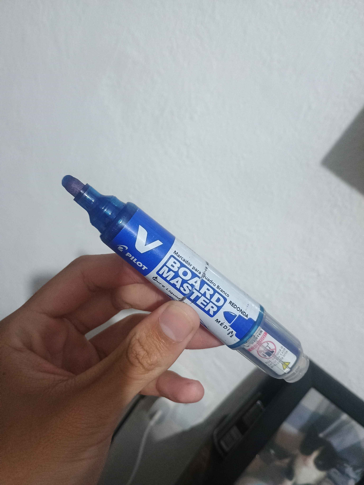
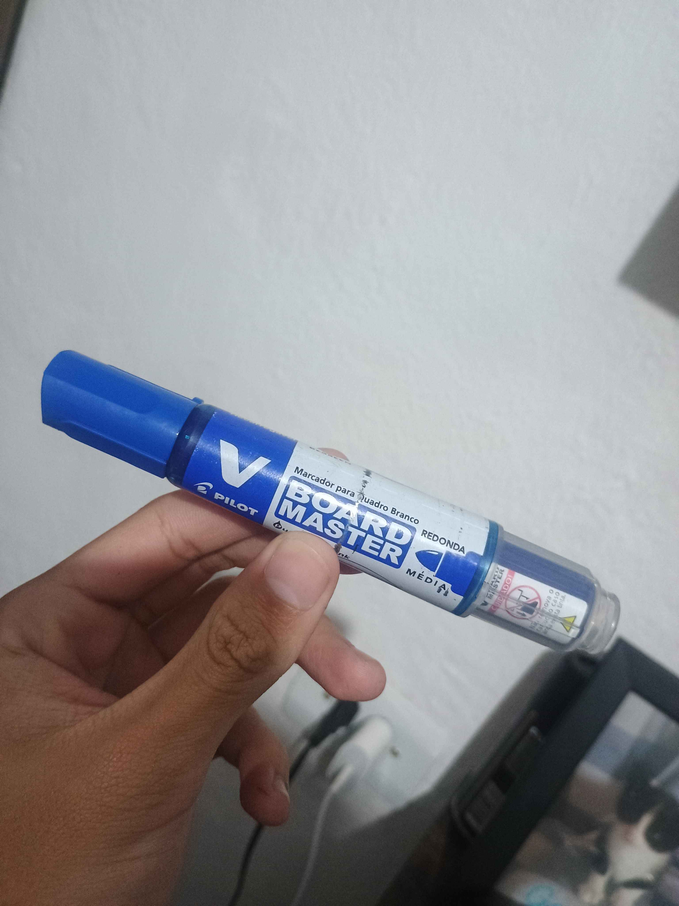

Capturar
A câmera ou o arquivo fornece uma imagem real. O sistema utiliza o mesmo enquadramento para exemplos e testes.
VISÃO COMPUTACIONAL · PROJETO ESCOLAR
Ensine o navegador a comparar imagens de uma caneta com e sem tampa. Depois, teste pela câmera ou envie uma foto.
Protótipo experimental. Requer exemplos e validação; não é um detector industrial.
01 / LABORATÓRIO
Use a mesma caneta, deixe a ponta visível e mantenha um fundo simples. A tampa precisa cobrir a ponta para contar como “com tampa”.
Abra a câmera ou envie uma imagem para começar.
HTTPS e permissão são necessários para a câmera. Enviar foto é uma alternativa. As imagens são processadas neste navegador.
02 / ENSINE COM EXEMPLOS
Selecione a classe correta e capture pelo menos 8 imagens diferentes de cada classe. Isso libera o experimento, mas não garante acerto. Varie posição e luz; mantenha condições parecidas entre as classes.
O treinamento fica na memória desta aba. Exporte o arquivo para guardar ou usar em outro celular. O arquivo guarda características numéricas das imagens; não guarde imagens ou dados pessoais como amostras.
Estas duas fotos não entram automaticamente no treinamento. Uma foto isolada não representa todas as condições da câmera.


03 / ENTENDA A IDEIA
A câmera ou o arquivo fornece uma imagem real. O sistema utiliza o mesmo enquadramento para exemplos e testes.
O MobileNet extrai características visuais. Guardamos os exemplos de cada classe para comparar novas imagens.
A nova imagem é comparada com exemplos próximos. O resultado pode ser “com tampa”, “sem tampa”, “sem caneta” ou “inconclusivo”.
O sistema classifica a imagem inteira: ele não localiza a tampa nem prova ausência de uma peça. Pode confundir fundos, cores e objetos. A pontuação mostra semelhança entre exemplos, não precisão medida. Teste com fotos novas, que não entraram no treinamento, e anote os erros.
04 / REGISTROS DA SESSÃO
Somente análises realizadas nesta aba. Nenhuma foto é guardada no histórico.
| Horário | Hipótese | Concordância | Tempo |
|---|---|---|---|
| Nenhuma análise realizada. | |||